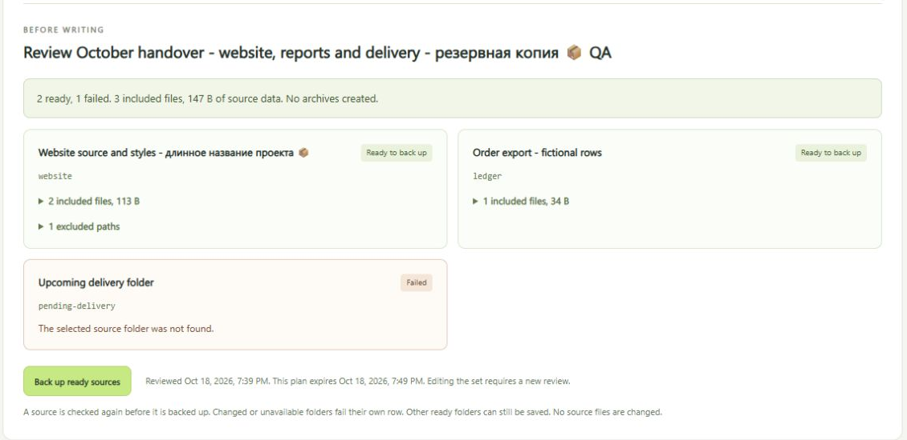
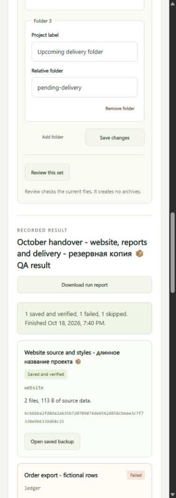

Workbench guide
Several projects. One clear review.
Save the folders you back up together. Review their current files, create a separate verified copy of each and see exactly which ones completed.

- 01
Keep the folder list.
Name a set and add folders from your workspace. Save up to 12 sets with up to 8 separate folders each. Saving a list does not start a backup.
- 02
Check each source first.
Review file paths, sizes, fingerprints and exclusions. A missing or unsafe folder fails its own row. Editing the set needs a new review, and a review expires after ten minutes.
- 03
Partial stays partial.
Ready folders are checked again and each new archive is verified. A folder that changed since the review fails, and a folder that failed review is skipped.

Try it
- Start the app. The overview shows how.
- Choose Backup sets. Enter a set name, then a label and relative folder for each project.
- Save the set and select Review this set.
- Read every ready and failed row, then select Back up ready sources. The result is saved to run history.

Changed files need a fresh review
Each folder is rescanned and its fingerprints recalculated right before the backup. The finished archive must match the reviewed paths, sizes and fingerprints before it joins the library. One failed folder never hides the other results.
Each review is used once. Restarting the app clears pending reviews, while saved sets and library records stay.
To recover, Open saved backup selects the exact completed copy. From there you can verify it, compare changes or review a recovery into a new folder.
Limits
- Up to 500 files, 20 MiB per file, 50 MiB of source data and a 52 MiB archive for each folder.
- Exclusions work by filename, so check the included paths yourself.
- No schedule, retention cleanup or cloud sync, and source files are never edited.
- Close programs that might change files during the run. A scan is not an atomic snapshot.